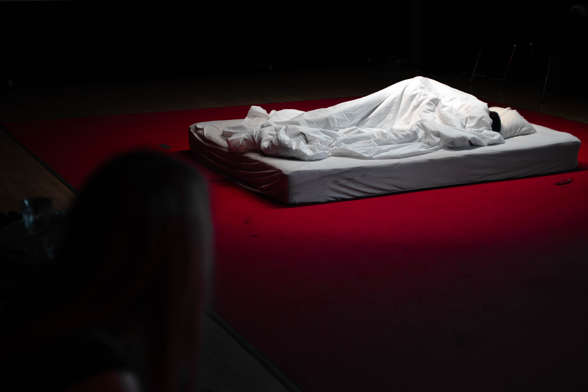
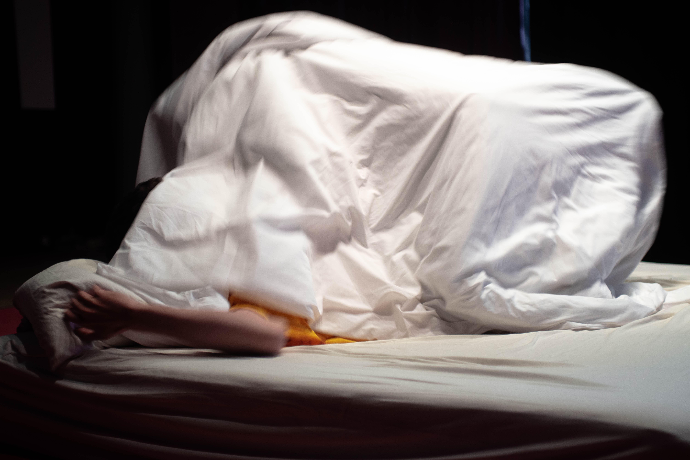
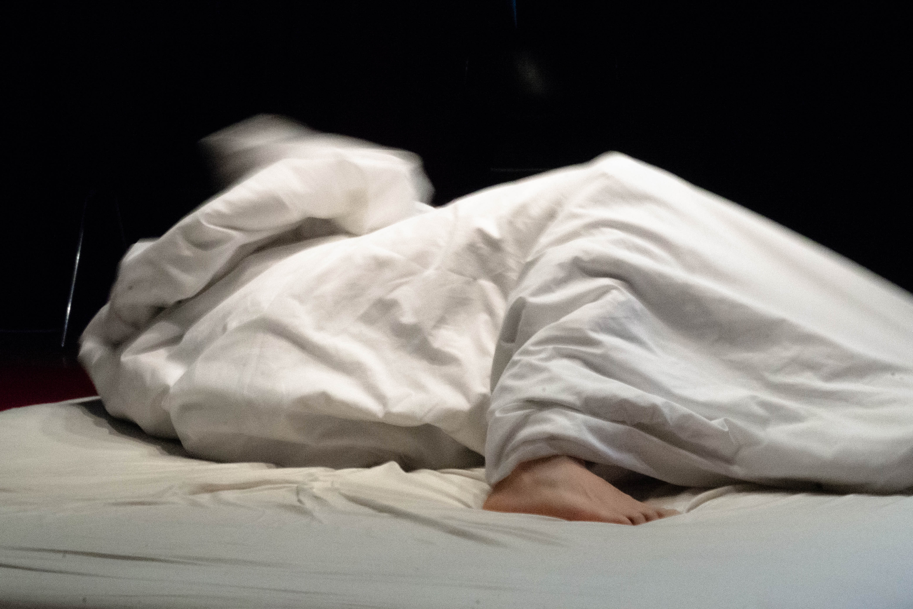
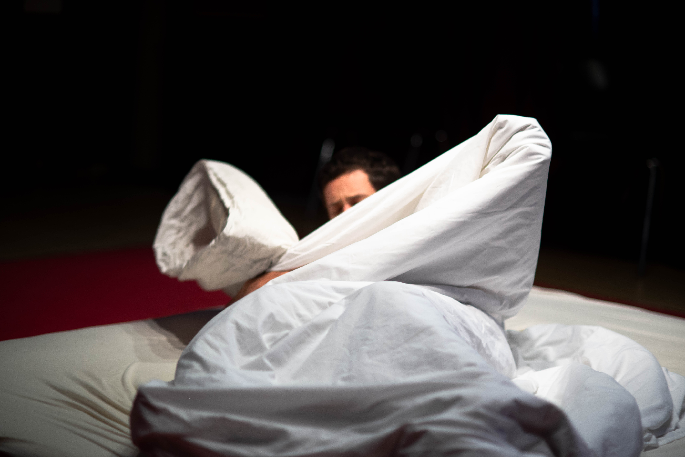
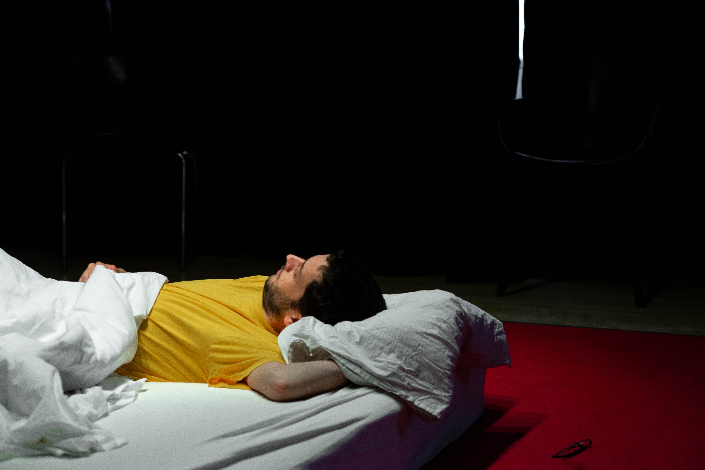
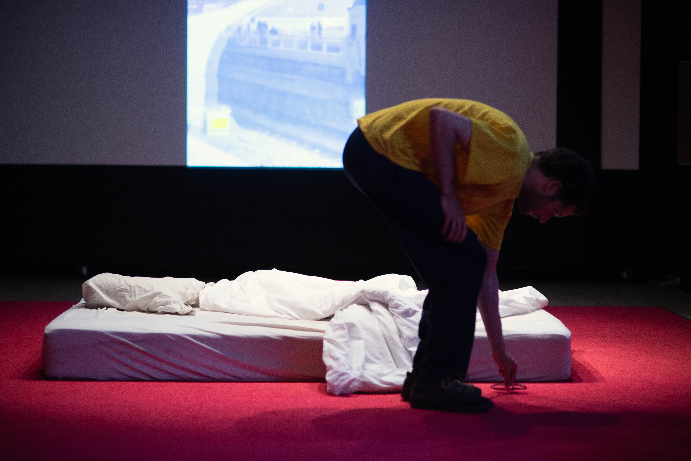

performance (5:08 minutes) - bed, escalator noises, spotlights
[photo: Abe Wientjes]performance (5:08 minuten) - bed, roltrapgeluiden, spotlights
[foto: Abe Wientjes]
tossing
[photo: Abe Wientjes]gewoel
[foto: Abe Wientjes]
turning
[photo: Abe Wientjes]gewoel
[foto: Abe Wientjes]
not dreaming
[photo: Abe Wientjes]gewoel
[foto: Abe Wientjes]
performance
[photo: Abe Wientjes]performance
[foto: Abe Wientjes]
leaving the bed
[photo: Abe Wientjes]het bed verlaten
[foto: Abe Wientjes]